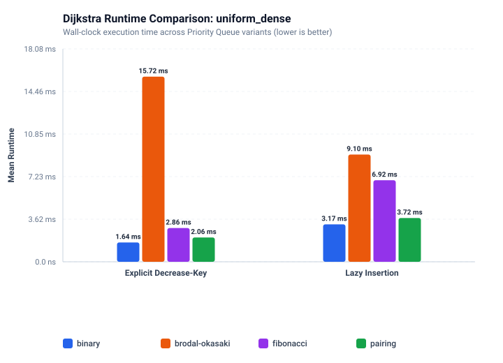
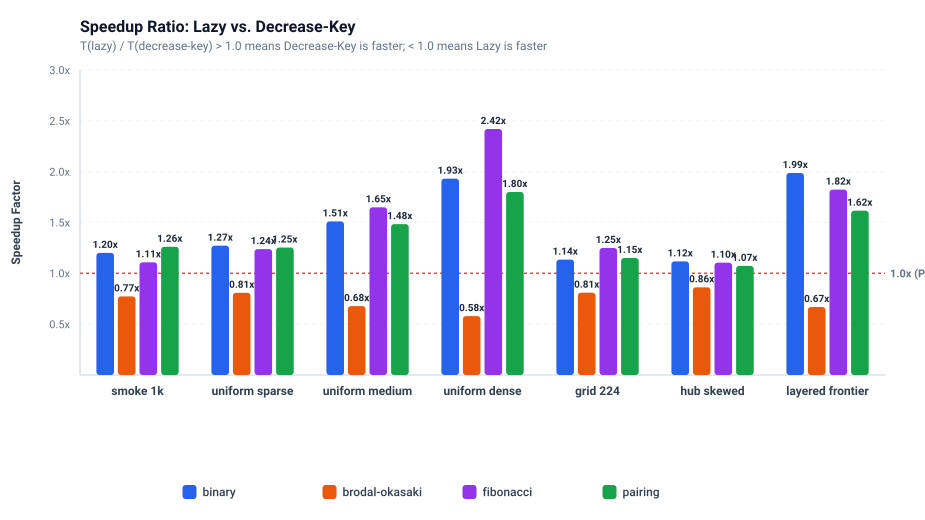
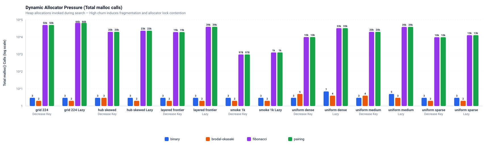

41052 Advanced Algorithms — Programming Assignment 2
Priority Queues in Dijkstra's Algorithm
An Empirical Study of Theoretical Optimality vs. Practical Hardware Execution
Truong Giang Nguyen
Student ID: 25520038
Primary Module: Binary Heap implementation & Dijkstra eager/lazy algorithm formulation.
Tung Nguyen
Student ID: 24666048
Primary Modules: Pairing Heap & Fibonacci Heap pointer implementations.
Oscar Chevalier
Student ID: 24834347
Primary Modules: Brodal–Okasaki imperative buffer adaptation & build/test pipeline.
Dijkstra's Algorithm & The Priority Queue Bottleneck
Single-Source Shortest Paths (SSSP) on directed graphs with positive weights
- Input: Directed graph $G=(V,E)$ with $n=|V|$ vertices, $m=|E|$ edges, positive weights $w: E \to \mathbb{Z}^+$, and source $s$.
- Non-Queue Work is Fixed: Exactly $\Theta(n + m)$. Every reachable vertex is settled once, and every outgoing arc is relaxed once.
- The Priority Queue is the Sole Variable: All performance variance between benchmark runs stems entirely from the priority queue implementation!
- Two Distinct Update Paradigms:
Lazy Insertion: Push $(d', v)$ on every relaxation; skip stale nodes at pop.
Eager Decrease-Key: Maintain 1 entry per vertex in queue; update key in-place.
Queue Operations by Dijkstra Variant
| Metric / Operation | Lazy Dijkstra | Eager Decrease-Key |
|---|---|---|
Total push |
$\le m + 1$ | $n$ |
Total pop (extract) |
$\le m + 1$ | $n$ |
Total decrease_key |
0 | $\le m - n + 1$ |
| Peak Queue Size | $O(m)$ (stale entries) | $\le n$ |
| Position Handles | None needed | Required (pos[]) |
The Four Contenders & The Core Hypothesis
Comparing theoretical asymptotic bounds against physical memory layouts
| Heap Variant | Insert (Push) | Extract-Min (Pop) | Decrease-Key | Node Layout & Pointers | Active Footprint |
|---|---|---|---|---|---|
| Binary Heap | $O(\log n)$ | $O(\log n)$ | $O(\log n)$ | Flat contiguous array (0 ptrs) | 24 B / vertex |
| Pairing Heap | $O(1)$ | $O(\log n)^*$ | $o(\log n)^*$ | LCRS multi-way tree (3 ptrs) | 48 B / vertex |
| Fibonacci Heap | $O(1)$ | $O(\log n)^*$ | $O(1)^*$ | Doubly-linked root list (4 ptrs) | 64 B / vertex |
| Brodal–Okasaki | $O(1)$ | $O(\log n)$ | $O(\log n)^\dagger$ | Relative buffer indices (0 ptrs) | 40 B / cell |
Pre-Registered Experimental Predictions:
Prediction 1 (Sparse Dominance): Binary heap will win on sparse graphs ($\bar{d} \le 4$) because contiguous memory and zero pointer indirection maximize cache efficiency.
Prediction 2 (The Dense Crossover): As density grows ($\bar{d} \gg 32$, $m \gg n$), decrease-key calls will overwhelm extractions, allowing Pairing and Fibonacci heaps to cross over and beat the Binary heap.
Binary Heap: Architecture & Position Indexing
Complete binary tree in a flat array paired with an external vertex lookup index
- Implicit Complete Tree:
Children of index $i$: $2i + 1$ and $2i + 2$.
Parent of index $i$: $\lfloor (i - 1) / 2 \rfloor$.
The tree structure itself is never stored in memory! - Zero Pointer Indirection: Elements stored contiguously in
Item data[](16 B per element: 4B distance, 8B vertex, 4B padding). - The Handle Requirement: External index array
size_t pos[](8 B per vertex) maps $\text{vertex} \to \text{array index}$ to support $O(1)$ entry lookup before bubbling. - Total Footprint: Exactly $16\text{ B} + 8\text{ B} = 24\text{ B per vertex}$.
Binary Heap: Deep Dive & The Indexing Tax
Why continuous position synchronization matters in Dijkstra's relaxation loop
The Critical Invariants
1. Heap Order: data[(i-1)/2].distance ≤ data[i].distance.
2. Position Synchrony: pos[data[i].vertex] == i for every index $i < \text{size}$.
- The Core Mechanism (
bubble&sink): During sift-up and sift-down, whenever an item moves from index $p$ to $i$, we must execute:pos[data[i].vertex] = i; - What Breaks Without It?
Without
pos[], locating a vertex duringdecrease_keywould require scanning the entire array in $O(n)$ time, degrading Dijkstra to $O(m \cdot n)$!
The Trade-Off & Hidden Tax
Every single swap in bubble() and sink() pays a secondary memory write to maintain the external pos[] lookup table.
Hardware Locality Wins: Despite the index tracking tax, all operations occur over a single sequential memory buffer. The CPU prefetcher effortlessly streams array elements into L1 cache lines with virtually zero pointer stalls!
Allocation Profile
Requires exactly 3 malloc calls for an entire Dijkstra run (one for Heap, one for data[], one for pos[]), completely eliminating allocator overhead.
Pairing Heap: Architecture & Left-Child Right-Sibling
Self-adjusting multi-way tree with O(1) cuts and trivial pointer detachment
- Left-Child Right-Sibling (LCRS) Layout: Each node represents an arbitrary multi-way tree using exactly 3 pointers:
child: points to leftmost childnext: points to right siblingprev: points to left sibling (or parent if first child) - Struct Overhead: 16 B Item + 24 B pointers = 40 B per node (+ 8 B handle in
pos[]= 48 B/vertex). - Trivial Melds: Merging two heaps takes $O(1)$ worst-case time by making the root with larger key the leftmost child of the smaller root.
prev pointer points to parent when first child, or left sibling otherwisePairing Heap: Deep Dive into Two-Pass Melds
Deferred structural rebalancing during extract-min prevents tree degeneration
Trivial Insert & Decrease-Key
Insert: Allocate node, meld(root, new_node) in $O(1)$.
Decrease-Key: Splice node out using prev and next, lower key, and meld(root, node) in $O(1)$!
All Heavy Work Deferred to Pop
Removing the root leaves an orphaned sibling chain $T_1, T_2, \ldots, T_k$. If melded naively, the tree collapses into a linear list of depth $O(n)$, causing subsequent extractions to degrade to $O(n)$!
The Critical Two-Pass Scheme
- Pass 1 (Left-to-Right Pairing):
Iterate through the children list in pairs:
$\text{pair}_1 = \text{meld}(T_1, T_2)$, $\text{pair}_2 = \text{meld}(T_3, T_4), \ldots$ - Pass 2 (Right-to-Left Accumulation):
Accumulate the pairs backward from the tail:
$\text{result} = \text{meld}(P_{last-1}, P_{last})$, cascading back to the front. - The Invariant: This two-pass reduction bounds tree height and guarantees $O(\log n)$ amortized extraction time.
Fibonacci Heap: Architecture & Marked Nodes
Circular doubly-linked root list with cascading cuts to enforce logarithmic degree
- Collection of Min-Trees: Maintained in a circular doubly-linked root list with a direct pointer
h->minto the minimum root. - Heavy Struct Layout (56 B / node):
• 16 BItem
• 4 Bdegree+ 1 Bmarked+ 3 B padding
• 32 B (4 pointers:parent, child, left, right)
• Total with handle: 64 B / vertex (an entire cache line!). - Lazy Work Strategy: Elements inserted in $O(1)$ without rebalancing; root list consolidation occurs strictly inside
pop().
Fibonacci Heap: Cascading Cuts & Consolidation
The mechanics behind O(1) decrease-key and the auxiliary degree array
Cascading Cut Invariant
The Problem: Arbitrary cuts during decrease-key could thin trees into high-degree, single-node chains, breaking the logarithmic height bound.
The Marking Rule:
• Node $x$ has its key decreased below parent $y$.
• Cut $x$ and promote to root list; $x.\text{marked} = \text{false}$.
• If parent $y$ is unmarked $\to$ set $y.\text{marked} = \text{true}$.
• If parent $y$ was already marked $\to$ cut $y$ to root list and cascade up the ancestor chain!
Enforces that a node of degree $d$ roots at least $F_{d+2}$ nodes $\implies d \le \log_\phi n$.
Consolidation during Extract-Min
When h->min is removed, all its children are promoted to the root list. Then consolidate() executes:
- Maintains degree lookup table:
Node* A[MAX_DEGREE]with 64 slots. - Iterates through root list, pairwise linking trees of identical degree until all roots have unique degrees.
- Practical Penalty: Requires extensive pointer rewriting, clearing/populating auxiliary degree tables, and widespread cache evictions.
Brodal–Okasaki Heap: Imperative Buffer Adaptation
Adapting purely functional skew-binomial queues to an in-place buffer with relative addressing
- From Pure Functional to Imperative: The original Brodal–Okasaki queue achieves optimal worst-case bounds ($O(1)$ push, $O(\log n)$ pop). We adapted it into an in-place imperative structure.
- Contiguous Cell Buffer (Custom Allocator):
• Cells reside in a flatTree* bufarray.
• Links useRelativeTree(index offsets) instead of absolute pointers $\implies$ entire heap can berealloc'd without pointer corruption!
• Custom internal free-list manages cell recycling. - Decrease-Key via Negative Tree Cancellation:
Because skew-binomial trees lack back-pointers, decrease-key pushes the old item into a negative queue and the new key into the positive queue. During pop, roots cancel out.
Node & Struct Layout
struct Tree {
Item it; // 16 B (distance, vertex)
size_t rank; // 8 B
RelativeTree child; // 8 B (buffer index)
RelativeTree sibling; // 8 B (buffer index)
}; // 40 B total per cell
Zero pointer overhead and only 2 to 5 mallocs per run. However, negative tree cancellation introduces heavy cancellation and restructuring during pop.
Experimental Methodology & Testbed Topologies
Controlled benchmarking harness on isolated Linux hardware across 7 graph families
Hardware & Benchmark Hygiene
CPU: Intel Core Ultra 7 165U (12 physical cores, 14 threads, up to 4.9 GHz).
Memory & OS: 30 GiB RAM, 64-bit Arch Linux (kernel 7.2.11-arch1-1).
Compiler: GCC with -O3 -std=c11 -Wall -Wextra.
Timing: ubench.h monotonic clock (CLOCK_UPTIME_RAW), $\ge 100$ iterations per test, 99% confidence half-width $< 5\%$.
Hardware & Memory Profiling: Linux perf stat (cycles, instructions, L1-D misses) and linker-wrapping (-Wl,--wrap=malloc).
The 7 Deterministic Input Graphs (Seed 67)
| Graph Name | $n$ (vertices) | $m$ (edges) | Topology Characteristic |
|---|---|---|---|
smoke_1k |
1,000 | 4,000 | Small correctness & linking baseline |
uniform_sparse |
10,000 | 40,000 | Sparse uniform digraph ($\bar{d} = 4$) |
uniform_medium |
20,000 | 200,000 | Medium relaxation digraph ($\bar{d} = 10$) |
uniform_dense |
10,000 | 500,000 | Dense relaxation workload ($\bar{d} = 50$) |
grid_224 |
50,176 | 199,808 | $224 \times 224$ 4-neighbour planar grid |
hub_skewed |
20,000 | 120,000 | Concentrated 32 hub vertices |
layered_frontier |
20,000 | 160,000 | 100 layers $\times$ 200 nodes (wide frontier) |
Empirical Runtime: The Binary Heap Dominates Everywhere
The predicted theoretical crossover at $\bar{d}=50$ never materialized
The Headline Result:
Binary Heap is the fastest implementation on EVERY SINGLE graph workload.
| Heap | uniform_dense |
grid_224 |
|---|---|---|
| Binary | 1.64 ms | 2.47 ms |
| Pairing | 2.06 ms (1.25×) | 3.10 ms (1.25×) |
| Fibonacci | 2.86 ms (1.74×) | 7.24 ms (2.93×) |
| Brodal | 15.72 ms (9.56×) | 12.28 ms (4.97×) |
Even at $\bar{d}=50$ on uniform_dense, Fibonacci Heap remains 74% slower than Binary Heap!

uniform_dense ($n=10\text{k}, m=500\text{k}$, $\bar{d}=50$) from frozen resultsLazy vs. Decrease-Key: The Duality & Brodal Surprise
Explicit handles defeat lazy queue bloat—except when decrease-key is too expensive
- For Binary, Pairing, & Fibonacci:
Decrease-key is strictly faster on every graph ($T_{\text{lazy}} / T_{\text{dec}} > 1.0$).
• Onuniform_sparse: Binary lazy is 1.27× slower (0.89 ms vs 0.70 ms).
• Onuniform_dense: Binary lazy is 1.93× slower (3.17 ms vs 1.64 ms); Pairing is 1.80× slower (3.72 ms vs 2.06 ms); Fib is 2.42× slower (6.92 ms vs 2.86 ms)! - The Cause: Queue Inflation: Stale entries swell lazy queue to $O(m)$ nodes, turning $n$ extractions into $m$ full $O(\log m)$ pops.
- The Brodal–Okasaki Inversion:
Lazy is faster on EVERY graph!
Onuniform_dense: Lazy takes 9.10 ms vs. Decrease-Key's 15.72 ms (0.58×). Negative tree cancellation was so costly that discarding stale entries was 42% faster!

Mechanistic Analysis: Allocator Churn & Hardware Counters
Why pointer heaps lost: memory manager pressure and instruction count
1. Dynamic Allocator Pressure
On uniform_dense (10,000 vertices, 500,000 edges):
- Binary Heap: Exactly 3 malloc calls
- Brodal–Okasaki: Exactly 5 malloc calls
- Pairing Heap: 10,002 malloc & free calls
- Fibonacci Heap: 10,002 malloc & free calls
On grid_224, Pairing and Fibonacci make over 50,178 dynamic allocations! Memory manager bookkeeping completely consumes theoretical speedups.
2. Total Retired Instructions
On uniform_dense eager Dijkstra:
• Binary: 49.2M instructions (51.6M cycles, IPC 0.95)
• Pairing: 57.0M instructions (58.2M cycles, IPC 0.98)
• Fibonacci: 67.2M instructions (66.3M cycles, IPC 1.01)
• Brodal: 171.3M instructions (187.6M cycles, IPC 0.91)

What Surprised Us & What We'd Do Next
Key discoveries from our empirical comparison and natural future extensions
Headline Surprises:
- The Binary Heap Imperium: The textbook crossover point where Fibonacci beats Binary did not occur even at $\bar{d}=50$. Contiguous arrays dominate pointer trees in practice.
- The Decrease-Key Reality: In random digraphs, only a small fraction of edge relaxations improve distance. The theoretical $m - n + 1$ bound is rarely exercised.
- The Brodal Inversion: When decrease-key is implemented inefficiently, Lazy Dijkstra is substantially faster than explicit decrease-key.
What We'd Do Next:
- Adversarial Worst-Case Graph Generators: Construct high-diameter, graded DAGs specifically designed to saturate all $m - n + 1$ decrease-key calls to force a true theoretical crossover.
- Custom Memory Arenas: Implement block-allocated memory pools for Pairing and Fibonacci heaps to eliminate the $10\text{k}+$
mallocpenalty. - Cache-Aligned $d$-ary Heaps: Compare 4-ary and 8-ary heaps using SIMD vector instructions for parallel child scans.